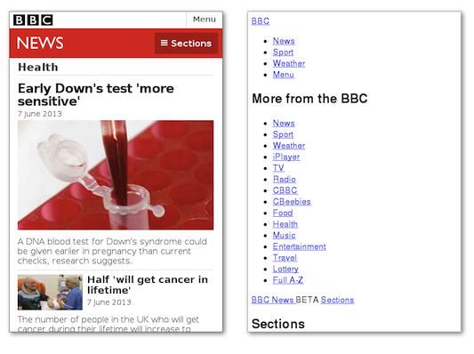

CSS Basics
Meet the C&C #LadyDevs

Amy Norris
Director

Alex Herron
Co-Director

Hyunsu Kim
Technical Materials Director

Gabi Dombrowski
Mentor Director

Kim Watt
Marketing Director

Nessa Shultz
Presentation Director

Open position!
Curriculum Director
Our Host this Evening
Formerly Logistics & Libations

Served by the lovely Laura Kozak!
Join us on...

#generation-x

#tabletop-games

#movies

#cats_and_doggos
Our mentors

are super heroes!
Before We Get Started...
This stuff is a challenge!
Don’t be discouraged if you don’t finish each worksheet section before the next presentation section begins.
We cover a lot of difficult material that will take time to understand. We are here (and on Slack after the session) to help!
Tonight's Agenda:
CSS Basics
- CSS Basics
- Grouping & Types of Selectors
- Box Model & Layout
- Text & Icons
- Extending Beyond Basic CSS
CSS Basics

What Is CSS?
- Cascading Style Sheets
- Controls how elements:
- Look
- Are positioned
CSS Controls How Elements Look
- Font, color, size of HTML elements of the same type
- All h3 elements will be blue, 14 point, Times New Roman
CSS Controls Layout
- Text alignment
- Size of images
- Placement of image caption
Why Do We Care About CSS?
- Makes your webpages look pretty!
- Default styling vs. styled page
What happens if we dont have CSS?
How To Include CSS in Your Project
- Inline on element
- Internal to HTML files by adding style tag in head
- External CSS file
External CSS File
- .css file extension
- Follow front-end architecture best practices:
- CSS files in folder for styles
Linking HTML & CSS File
- Link to CSS file in HTML head section
- <link> tag links external file (our stylesheet)
- rel attribute tells browser the linked file is for styles
- href attribute tells browser the location of the file
<link rel="stylesheet" href="styles/styles.css" >
Note about CSS files:
- Possible to have multiple style files for your project
- Possible to link multiple style files to one HTML file
- We will only use one style file in this session
How to Write CSS
- Define a style for a selector
- Looks like this:
- Property: color property
- Value: red value
selector {
property: value;
}
Selectors
- How you target the HTML to style
- Element selector
- Class selector
Element Selector
- Selects all elements of a given type
- Example: h1 selector
- Selects and styles all h1 elements
- Good for base styles
Element Selector Example
h1 {
color: rebeccapurple;
}
Class Selector
- Styles HTML elements with matching attribute name
- Classname can be used multiple times on one page (and multiple pages)
- Good for styling specific elements
Class Selector Example
HTML:
<h1 class="cocktail">Cosmopolitan</h1>
CSS:
.cocktail {
color: rebeccapurple;
}
Cosmopolitan
Selectors Can Also Include:
- HTML element attributes (for interactive elements such as input type)
- Location of the elements in HTML
- Element state (such as visited or hover)
- Combination of multiple selectors
Selector Note
We will talk about different ways to select elements and how to build up a set of style rules for your site.
Semantic Class Names
- Choose a name that describes what element is, not how it looks or behaves
Why is Semantic Class Names Important?
- Provide clearer meaning
- Easier to maintain
- Responsive websites may change how element looks
- .white-nav makes sense in desktop but not when blue in mobile

Basic Properties & Their Values
- Units of Measurement
- Color
- Properties
Units of Measurement
- Absolute
- Relative
Absolute
- pixels [px]
- There are other absolute units, but they aren't common
Relative
- Percent [%]
- rem / em
- vh / vw
Percent [%]
- Relative to parent element
- Can be used for width, height, margin, padding, font-size
Percent Example
ul {
margin: 18px;
}
li {
margin: 100%; // 100% of 18px = 18px
}
rem / em
- Relative to root element
- If root element is 16px, 1rem for an element = 16px
- Can be used for width, height, margin, padding, font-size
REM Example
html {
font-size: 18px;
}
h1 {
font-size: 2rem; // 2 * 18px = 36px
}
vh / vw
- Relative to viewport height / width
- Can be used for width, height, margin, padding, font-size
Color
- Keep accessibility in mind when selecting colors (provide enough contrast)
- Lighthouse is built into Chrome DevTools to see where accessibility can be improved
Color
- Hexadecimal
- RGB
RGB
- 3-digit RGB code
- Each digit represents 256 values (0-255)
- Each pair of digits represents a color (red, green, blue)
RGB
rgb(red, green, blue)
Each being a number based on insitity: `0-255`
RGB
- rgb(255, 0, 0) = red
- rgb(0, 255, 0) = green
- rgb(0, 0, 255) = blue
- white: rgb(255, 255, 255)
- black: rgb(0, 0, 0)
rebeccapurple
- rgb: rgb(102, 51, 153)
- 40% red: 40% of 255 = 102
- 20% green: 20% of 255 = 51
- 60% blue: 60% of 255 = 153
RGB Example
h1 {
color: rgb(255, 0, 0); // red
}
Hexidecimal Numbers
- Hexadecimal is a base 16 number system
- Each digit represents 16 values (0-9, A-F)
- Each pair of digits represents a color (red, green, blue)
white
- #ffffff
- red: 'ff'
- 15 * 16 = 240
- 15 * 1 = 15
- 240 + 15 = 255
- red: 255
- red in RGB: 255 or 100% red
- rgb: rgb(255, 255, 255)
rebeccapurple
- hex: #663399
- red: '66'
- 6 * 16 = 96
- 6 * 1 = 6
- 96 + 6 = 102
- red: 102
- red in RGB: 102 or 40% red
- rgba(102, 51, 153)
Hex Example
h1 {
color: #ff0000; // red
}
Quick Note About Hex
- You can use shorthand hex
- #ffffff = #fff
- #663399 = #639
Properties
- color
- background-color
- border-color
- outline-color
- box-shadow
- >300 diifferent properties in CSS with ~ infinite values

Properties
- You don't have to remember them all, just how to look up a property or value
- https://developer.mozilla.org/en-US/docs/Web/CSS/Reference
- Each proiperty has a specific set of valid values
- In addition to the worksheet, you can practice with the resources & homework we'll provide, including fun games for honing your skills with CSS.
The Cascade
- Process of combining multiple stylesheets and resolving conflicts between different CSS rules and declarations
- Order of CSS rules matter - there's a hierarchy to the cascade
Source Order
- Later rules win over earlier rules (of the same specificity)
Specificity
- More specific rules win over less specific rules
Order of Specificity (lowest to highest)
- Universal selector (*)
- Element selectors (p, h1)
- Classes (.myClass)
- IDs (#myId)
- Combining selectors to make rules more specific
- !important (WARNING: Bad practice)
Specificity Example
<h1 class="myClass" id="myId">Hey Girl!</h1>
h1 {
color: red;
}
.myClass {
color: blue;
}
#myId {
color: green;
}
What color will 'Hey Girl!'' be?
Inheritance
- Children inherit traits from their parents: tall parent will likely have a tall child
- Parent's properties may be inherited by child element
- If you don't specify a property for an element, it will inherit the value from its parent
Inheritance Example
<div class="parentDiv">
Parent div
<div class="childDiv">
Child div
</div>
</div>
.parentDiv {
color: #c7bc75;
}
Inheritance Example
<div class="parentDiv">
Parent div
<div class="childDiv">
Child div
</div>
</div>
.parentDiv {
color: #c7bc75;
}
.childDiv {
color: #f5f5f5;
}
Note About Inheritance
- Don't build your champagne fountain on a waterbed
- Start styling by elements (such as <body> or <h1>
- Then override by adding more specificity

Comments
- Comments are not displayed in the browser
- Comments are used to explain code, and to prevent execution when testing alternative code
- Comments can be used to prevent execution of code
Comments
/* This is a comment */
Browser Prefixes (or CSS Vendor Prefixes)
- Not all browsers can support all CSS properties
- Use CanIUse to determine if prefixes are needed
Browser Prefixes
- To make sure your code works in all browsers, you can use a browser prefix
- The prefix tells the browser to use a different syntax for the property
- For example, the border-radius property is not supported in Internet Explorer 8 and earlier
Prefix Example
.sample-parent-container {
border-radius: 10px;
}
.sample-parent-container {
-moz-border-radius: 10px;
-webkit-border-top-left-radius: 10px;
-webkit-border-bottom-right-radius: 10px;
-webkit-border-top-right-radius: 10px;
-webkit-border-bottom-left-radius: 10px;
border-radius: 10px;
}
Work Time
See you soon!
https://bit.ly/kcwit-html-worksheet

Selectors

CSS Is Powerful
- Apply set of styles as broadly or as specific as you desire across your site
- i.e. All elements of the site have blue text versus one single header
- Selectors are used to "find" HTML elements
Selector Simple Recap
- Property: color property
- Value: red value
selector {
property: value;
}
Grouping Selectors
- Grouping selectors is a way to apply the same style to multiple elements
- Separate each selector with a comma
Two Ways to Group Selectors
- Multiple Selectors for more generalized styles
- Combining Selectors for more specific styles
Multiple Selectors
- Multiple selectors are used to apply the same style to multiple elements
- Separate each selector with a comma
- Allows you to apply styles more broadly
Multiple Selectors Example
<h1>H1</h1>
<h2>H2</h2>
<h3>H3</h3>
<h4>H4</h4>
<h5>H5</h5>
<h6>H6</h6>
H1
H2
H3
H4
H5
H6
Multiple Selectors Example
Goal: Make all headers "wild strawberry"
h1, h2, h3, h4, h5, h6 {
color: #ff43a4;
}
H1
H2
H3
H4
H5
H6
Multiple Selectors Example
<p class="status">Coding with a cocktail on the side.</p>
<p>I'm an unstyled paragraph.</p>
<p class="learning">I am learning CSS and web development.</p>
Coding with a cocktail on the side.
I'm an unstyled paragraph.
I am learning CSS and web development.
Multiple Selectors Example
Goal: Make paragraph text with class of status and learning "peach"
.status, .learning {
color: #ffaa88;
}
Coding with a cocktail on the side.
I'm an unstyled paragraph.
I am learning CSS and web development.
Combining Selectors
- Combining selectors are used to apply the same style to multiple elements
- Allows you to apply styles more specifically
- Notice no space between HTML element and class
Combining Selectors Example
<p class="status">Coding with a cocktail on the side.</p>
<p class="learning">I am learning CSS and web development.</p>
Coding with a cocktail on the side.
I am learning CSS and web development.
Combining Selectors Example
Goal: Make paragraph text with class of status "seagreen"
p {
color: #fff;
}
p.learning {
color: #20b2aa;
}
Coding with a cocktail on the side.
I am learning CSS and web development.
Combinng Selectors Example
<p class="about learning">I am learning CSS and web development.</p>
<p class="about pets">I have one goofy dog and three grumpy cats.</p>
I am learning CSS and web development.
I have one goofy dog and three grumpy cats.
Combinng Selectors Example: Double Class Selector
Goal: Make paragraph text with class of about "seagreen" and text about pets "red"
p.about {
color: #20b2aa;
}
p.about.pets {
color: #f00;
}

I am learning CSS and web development.
I have one goofy dog and three grumpy cats.
Recap of Types of Selectors Thus Far
- Element Selector
- Class Selector
- Multiple Selector
Attribute Selectors
- Spcial HTML element attribute for styling
- Allows for even more specifically in styling
- Attributes have different syntax of [ ]
Attribute Selectors Example
<!-- HTML -->
<a href="https://www.kcwit.org">KCWIT</a>
<!-- CSS -->
a[href="https://www.kcwit.org"] {
color: #20b2aa;
}
KCWIT
Attribute Selectors Example
<!-- HTML -->
<a href="https://www.kcwit.org">KCWIT</a>
<!-- CSS -->
a[href="https://www.kcwit.org"] {
color: #20b2aa;
}
Attribute Selectors Example
<fieldset>
<legend>Select a pet</legend>
<div>
<input type="radio" name="pet" value="dog" id="dog">
<label for="dog">Doggos</label>
</div>
<div>
<input type="radio" name="pet" value="cat" id="cat">
<label for="cat">Cattos</label>
</div>
</fieldset>

Attribute Selectors Example
Goal: Make the dog label of the radio button skyblue
...
<input type="radio" name="pet" value="dog" id="dog">
<label for="dog">Doggos</label>
...
label[for="dog"] {
color: #87ceeb;
}

Location-based Selectors
- Selects elements based on their location in the HTML document
- Examples: :first-child, :last-child, :nth-child()
Location-based Selectors
- You can define selectors based on element location within the DOM (Document Object Model)
- Following image from https://en.wikipedia.org/wiki/Document_Object_Model

What Do We Mean By Location?
- Browser tunrs HTML into the DOM
- Specify a selector based on where the HTML is
- Examples: House address
Location-based Selectors: Relationship
- Directions: Instead of north & south, use relationshipts (like a family tree)
- Relationships: child, parent, sibling, descendant, ancestor
- Amount of nesting in HTML element roughly describes that relationship
Location-based Selectors: Relationship
- Child: Direct descendant
- Parent: Direct ancestor
- Sibling: Same parent
- Descendant: Any descendant
- Ancestor: Any ancestor
Relationship Example
<parent>
<child>
<grandchild></grandchild>
</child>
<child></child>
<child></child>
</parent>
Location-based Selectors
<ul>
<li>
<em>Most important item</em>
</li>
<li>
Second most important item
</li>
</ul>
- Most important item
- Second most important item
Location-based Selectors
<ul>
<li>
<em>Most important item</em>
</li>
<li>
Second most important item
</li>
</ul>
li em {
color: lime;
}
- Most important item
- Second most important item
A Closer Look at the CSS
li em {
color: lime;
}
- Note the space between the selectors
- Space means: "select all em elements that has li as an ancestor"
Selectors Relationship
- Relationship between two selectors do NOT need to be adjacent
- You can skip levels
What Color This Is:
<ul>
<li><em>Most important item</em></li>
<li>Second most important item</li>
</ul>
ul em {
color: lime;
}
em {
color: aqua;
}
Answer
- Most important item
- Second most important item
Hey girl

Debugging
- Use the browser's developer tools
- You can edit styles inside of the DevTools
- Example
Combinators
- Fancy word meaning to combine selectors
- Combining selectors allow us to apply styles as broadly or as specifically as we need
- There are three combinators: descendant, child, and adjacent sibling
Descendant combinator
- Has space between two selectors
- Our example before had a path ul li em
- With the descendant combinator, we can say:
ul em {
color: lime;
}
Child combinator
- Must be an exact child path
- Has > between two selectors
- With the child combinator, we can say:
li > em {
color: lime;
}
<!-- Does not exist -->
ul > em {
color: lime;
}
Adjacent sibling combinator
- Must be an exact sibling path
- Can be dissimilar elements (such as h1 + p)
- Has + between two selectors
- Applies color of lime to the second item on the list
li + li {
color: lime;
}
State-based Selectors
- Allows us to style elements based on their state
- Also called pseudo-class Selectors
- Syntax is a single colon: selector:state
State-based Selectors
- :hover
- :active
- :focus
- :visited
State-based Selectors Example
button:hover {
color: lime;
}
a:visited {
color: red;
}
Styling Specific Parts of Selector
- Psudo-elements: keyword added to a selector to style part of the specified element
- Syntax (double colons):
selector::pseudo-element {
property: value;
}
Styling Example
a::before {
content: "🔗";
}
Try out 🔗arc.net
Other examples of psuedo-elements
- ::first-letter
- ::first-line
- ::selection
- ::after
Work Time
See you soon!
https://bit.ly/kcwit-html-worksheet
Box Model & Layout

Box Model
- Every element on a page is a rectangular box
- Spacing inside the box, outside the box, and the cardboard itself takes up space
- Box has 4 parts: content, padding, border, margin
- Can be styled with CSS
- Spacing has standardized vocabulary called "The Box Model" in CSS
The Box Model in Terms of Pizza
- Content: the pizza
- Padding: the space between the pizza & the box
- Border: the cardboard box
- Margin: the space outside the pizza box (and the space between the pizza box and another box)


Box Model Properties
- Each spacing property can be broken up for each side of the box
1-value Syntax
All edges
margin: 1em;

2-value Syntax
Vertical horizontal
margin: 1em 2em;

3-value Syntax
Top Horizontal Bottom
margin: 1em 2em 3em;

4-value Syntax
Top Right Bottom Left (Clockwise)
margin: 1em 2en 3em 4em;

Source:
https://developer.mozilla.org/en-US/docs/Web/CSS/Shorthand_properties
Layout & Layout Systems
Basics of Layout in CSS
- Layout is the arrangement of elements on a page
- Display / Inline
- Inline vs. Block
- None vs. Visibility
- Z-Index
Z-Index
- Z-index is a property that controls which element is on top
- The higher the number, the higher the element is on the page
- The default value is 0
- Negative values are allowed
Layout Systems
- Most sites use layout systems
- Why? More poserful than basic CSS layout and allows for responsive design
- Olden days of the internet, developers used HTML tables for layout
Why were HTML tables bad for layout?
- Very limited layout
- Non-responsive
- Non accessible
- HTML is NOT for layout & styling, but for content (Don't forget your front-end architecture!)
Layout Systems
- CSS Grid
- Flexbox
Advantages of Flexbox and CSS Grid
- Handles complex layout needs
- Handles wrapping and flexibility for different display sizes (phones, smart displays, tablets, big tv's)
- Maintainable code - no need to employ workarounds and hacks for layout
- Now the standard way of adding layout
When to Use CSS Flexbox and Grid
- 1-dimensional layout
- 2-dimensional layout
1-dimensional Layout
- Use CSS Flexbox
- Elements lay out next to each other in either row or column (but not both)
- Elements can wrap to multiple rows or columns
- Example
2-dimensional Layout
- Use CSS Grid
- Elements lay out horizontally and vertically from each other in both rows and columns
- Used more often
- Example
Flexbox & Grid
- Flexbox is 1-dimensional
- Grid is 2-dimensional
- They are not an either/or layout system
- You can use BOTH when styling
CSS Grid Nom Nom Gallery
- Shows grid with definted height (1st row) and dynamic heights (3rd row and on) in masonry pattern
- Responsive
- Type of layout is very painful without grid
- Flexbox handles the responsiveness
How to Use a Layout System
- HTML: create a parent container with a class to style
- Define the styling to add grid and/or flexbox
HTML
- Common parent containers: main, header, footer, form, section, article, div
<section class="container">
<!-- Child elements here -->
</section>
CSS
- In the styles for the container, add the following:
display: grid;display: flex;display: inline-grid; display: inline-flex;
.container {
display: grid;
}
Grid/Flexbox Note
- Default is display: block
- We are overriding the display to use grid for elements inside container
- Aka, all child elements of <section> are grid items
- Worksheet will go into more details on how to use Grid/Flexbox
Work Time
See you soon!
https://bit.ly/kcwit-html-worksheet
Text & Icons

Common CSS Properties
- color
- text-align
- font-size
- font-family
font-family
- Find fonts online (such as Google fonts, which is free)
- Link in HEAD or use @import
- List preferred web safe font and a backup:
- Use quotes for fonts with two words:
font-family: 'Roboto', sans-serif;
font-family: 'Comic Sans', cursive;
Icons
- Find icons online (such as Font-Awesome, Google icons, or Heroicons)
- Link in HEAD or use @import
Font-Awesome
- Once included in your project, use class name `fas fa-code` for the code icon in your html
- Use `::before` pseudo element to add the icon
- Add class attribute
Work Time
See you soon!
https://bit.ly/kcwit-html-worksheet
Extending Beyond Basic CSS

Queries
- Media queries
- CSS Feature Queries
Media Queries
- Can specify different CSS for printing, mobile, and for different screen widths
- Syntax @media(when-applicable) {styles}
@media not|only mediatype and (expressions) {
CSS-Code;
}
Media Types
- all - used for all media type devices
- print - used for printers
- screen - used for computer screens, tablets, smart phones, etc.
- speech - used for screenreaders that "reads" the page out loud
Media Query Example
body {
background-color: tan;
}
@media screen and (max-width: 992px) {
body {
background-color: blue;
}
}
@media screen and (max-width: 600px) {
body {
background-color: green;
}
}

Media Query
- Useful, but many mobile-friedle content uses layout systems instead of solely relying on media queries
- Most useful for printing at specific sizes
CSS Feature Queries
- Uses @supports selector to define fallback styles
@supports (display: grid) {
/* do cool grid thing */
}
CSS Compilers
- Used by many development teams
- Also called pre- & post- processors
- Allows you to write CSS faster and cleaner
- Gives CSS superpowers
- Browsers only understand CSS, so we have to convert from one format to plain CSS
CSS Compilers
- Common precomilers: Sass & Less
- Write code using the superpowers that pre-processors provide
- Use a compiler to take the pre-processed code [Wonder Woman] to compile the code to plain old CSS [Diana Prince] for the browser
CSS Frameworks
- Many development teams use CSS frameworks instead of writing their own CSS
- Collection of pre-written CSS code that you can use to style your website wiht pre-defined styles
- Some CSS frameworks allow you to customize the styles, too
- Useful for quickly styling a website
Why Use CSS Framework?
- Allows developers to focus on application features rather than styles
- Styling sites becomes much faster
- CSS frameworks are designed to be responsive
- Downside: Learning curve of learning the styles of the framework
How Does This Work?
- Import the framework into your site:
<!doctype html>
<html>
<head>
<meta charset="UTF-8">
<meta name="viewport" content="width=device-width, initial-scale=1.0">
<script src="https://cdn.tailwindcss.com"></script>
</head>
</html>
How Does This Work?
- Use the styles provided by the framework:
<h1>Hello world!
<h1> class="text-3xl font-bold underline text-pink-500 background-pink-50">
Hello world!
</h1>
Hello world!
Hello world!
Popular CSS Frameworks
- CSS Bootstrap
- Tailwind
- Materialize
- Bulma
Awesome CSS
- CSS can be mind-blowing
- Check out incredible examples on #CSSis {beautiful}
- Book cover opening/closing: code and live site
- Rolling Coke Can
Resources & Homework Ideas
Play Games to Learn More About CSS
Take a Free Course
What's Next
- Networks!
- Take the quiz
- Join Slack
- Finish tonight's worksheet
- Find an online tutorial on Front End Architecture
- Register for next month's event
Keep up with us
codingandcocktails.kcwomenintech.org


#LadyDevs #KCWiT
#CodingAndCocktailsKC